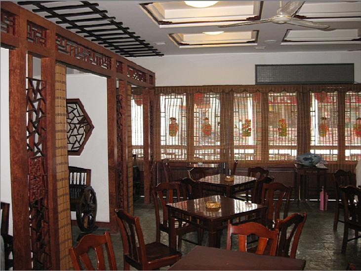
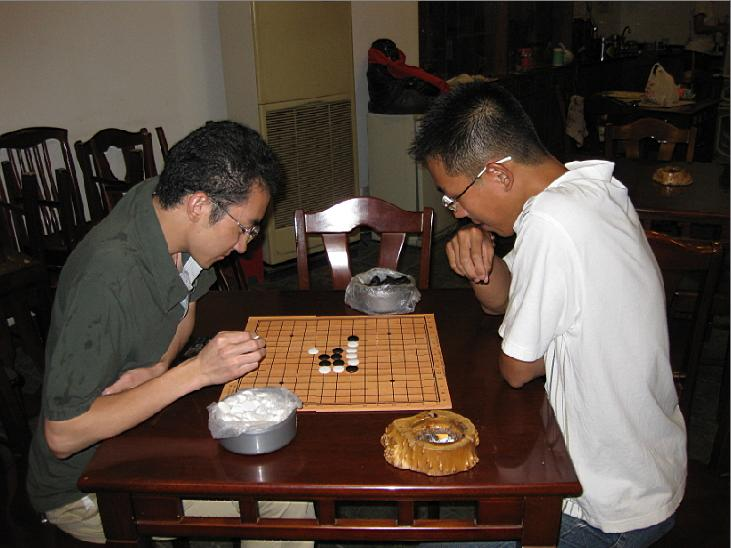

首届江苏联赛苏州站比赛全程回顾
#1 首届江苏联赛苏州站比赛全程回顾 作者：紋枰論道 发表时间：2008-8-18 23:03:16
注：(丸子因为没有参加活动和所提供给他的资料不充足，因此写得有些失实，谨以此文加以修正)
首届江苏联赛第二站比赛在苏州举办是第一站比赛刚结束就决定好了的，但是因
为一些原因，比赛的时间一直不能确定，几经修改，最后决定在8月15日-8月17日
举行，初步决定打五轮，傅大哥也抓紧时间为比赛做最后的安排，14日傍晚的时
候天空突降暴雨，这时我开始犹豫明天如果下暴雨我该不该去了，晚上狮姐说要
帮我为明天的比赛热热身,盛情难却，就这样下了两盘，一胜一负，末了，狮姐叮
嘱我下稳点，不要下的太激进了(感动ing~~)。
（（狮子（B）VS 道道（W）寒星不交换 5A=6 黑胜））
=======上图对应的爱五子棋谱代码如下，以便你拆解：========
h8h7h6i7j7g7f7h9g6h5f9e8j8i6f8f10i8g8j9j5k4j10l5m6l6
======================================================
因为某些原因，自第一站结束后就几乎
再没碰过棋了，计算、棋感和定式储备都严重下降了，我想总不能直接就这样去
让人蹂躏吧，至少输也要输出点水平来，所以当天晚上看了些谱，准备了一个松
月一打的变化，一个云月骗招，一个岚月最强变化和一个斜一打自己研究的变化
，最后一个是专门为傅大哥准备的(假如我猜到黑先的话)。
15号很早就起床了，花了一个上午把那几个变化又熟悉了一下，又重点拆了下最后一个变化，吃过午
饭开始复习功课，心情一直不能平静，似乎在期待着什么，到下午3点的时候开始
打包走人，随便往包里塞了几件衣服、几本书和一些洗漱用品，带了个相机，在
老爸的陪同下来到车站买好了票，3：40pm汽车启动，比赛征程正式开始。。。
经过2个小时漫长的旅途终于来到了市区，此时已过5：30了，下车走了两步一回
头就看了傅大哥，傅大哥告诉我杨彬已经到了，现在在观前街自由活动，于是我
们打车来到了观前，又步行转了好几个弯，终于来到了比赛的场地—春蕾茶馆，
一间很安静很雅致的茶楼。

上了楼一眼就看到了杨彬，互相寒暄一阵后，杨彬就
摆开棋盘要和我下棋，下就下吧，谁怕谁啊，就这样对杀起来了，正在我们俩下
棋正酣的时候，严雅丽过来了，于是4个人去找餐馆吃晚饭，简单用完晚饭，大约
6点多的时候郑勇过来了，于是杨彬和严雅丽，傅亮和郑勇分两桌开始互相交流。

之后我和杨彬又下了一盘，杨彬超BT的给我开了个蒲月，我7手直接走错(太弱了。。)，之后就完全是赤裸裸的防守，没想到最后还被我守和了，运气真是太好了。
（（Me（B）VS 杨彬（W）蒲月交换 5A=9 Draw））
=======上图对应的爱五子棋谱代码如下，以便你拆解：========
h8i7i9g7j9j7k7k9j8h10k8i8k6l7l6m5j6i6i5l8f7j10m7k4i11g10i10g8g9f9e10g4h5h4g6e8h11g12j5i4j4g5k3f4e4h6e3j3l5k5d7e7f6
======================================================
10点活动结束，傅大哥把我和杨彬安排在了离活动地点不远的一个旅店里，当我打开门开亮电灯，惊奇
的发现了一只小强在乱窜。。杨彬宣称今晚一定要把它拍死(这只小强咋就这么可
怜呢。。)，在朦朦胧胧想睡的时候，突然离我不远的一只灯泡连续爆了两次，玻
璃片乱飞，我突然觉得可怜的是我自己了。。这个微小的爆炸竟然引起了正在洗
澡的杨彬两次尖叫(我靠，我离这么近都没叫，你叫什么啊，要死第一个肯定轮不
到你。。)，最倒霉的是整晚被蚊子咬，哎，这真是交了钱自己找罪受。
早上一起来，杨彬就吵着要去退房了，我们和傅大哥约好9：00am在茶馆见，吃完早饭离9
：00还有20分钟的样子，不急着去，我和杨彬就去玄妙观转了一圈，顺便拍了些照片。
#2 Re:首届江苏联赛苏州站比赛全程回顾 作者：紋枰論道 发表时间：2008-8-18 23:16:07
看了要留言。。。
#3 Re:首届江苏联赛苏州站比赛全程回顾 作者：江南新绿 发表时间：2008-8-19 1:10:18
道道的算力好强啊。松一都能轻松砍下来。
#4 Re:首届江苏联赛苏州站比赛全程回顾 作者：南京小飞机 发表时间：2008-8-19 9:37:33
道道下次不要羞辱我了啊
#5 Re:首届江苏联赛苏州站比赛全程回顾 作者：yidefei 发表时间：2008-8-19 23:17:48
好强的道道！
因为前段时间看了看三打的些许变化，觉得强变化估计你会，就选择了一打。而此前两三天曾用此一打同样变化在ORC中下过，那时有一些人还是走的很艰难的。考虑到实战，所以，就把一打留给了你！
此前开松月时，本想换成银月打点和你下，但又因白天和你拆过些银月的变化，不敢冒然行事，唉，可怜的我，居然还是中着了
#6 Re:首届江苏联赛苏州站比赛全程回顾 作者：狮子何必吼 发表时间：2008-8-20 18:49:37
 还可以玩转道观啊～～真应该去的～～说不定遇到一个道长高人指点指点中医养生什么的
还可以玩转道观啊～～真应该去的～～说不定遇到一个道长高人指点指点中医养生什么的 ５５５～～～ps，寒星是道道开的我换的哈～～
５５５～～～ps，寒星是道道开的我换的哈～～
还有，楼上就是小郑啊 ，一直８知道唉～～
，一直８知道唉～～
道道辛苦啦，写的很水平滴说，我顶～我踹～我灌……
#7 Re:首届江苏联赛苏州站比赛全程回顾 作者：紋枰論道 发表时间：2008-8-20 19:28:52
狮姐开的寒星啊，第一盘我开疏，第二盘你开的寒。。。
#8 Re:首届江苏联赛苏州站比赛全程回顾 作者：lfzxdh 发表时间：2008-8-27 8:01:18
糊涂啦~~
感觉你们的棋盘比较经济,应当学习
#9 Re:首届江苏联赛苏州站比赛全程回顾 作者：罗马王子 发表时间：2008-8-29 22:26:26
 道道加油！希望下次到南京再聚！
道道加油！希望下次到南京再聚！